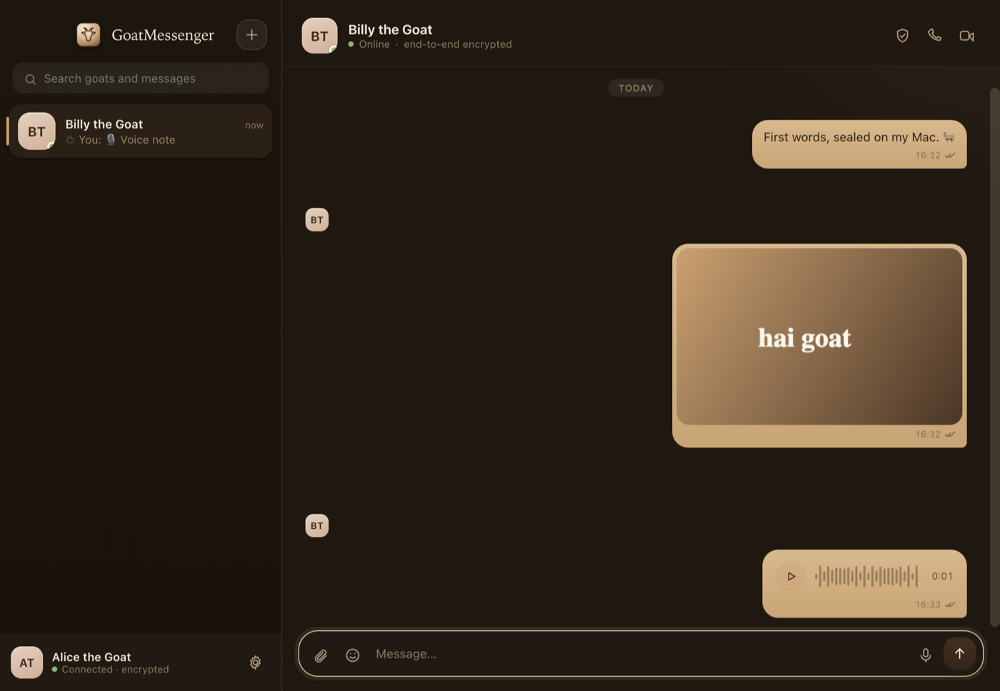
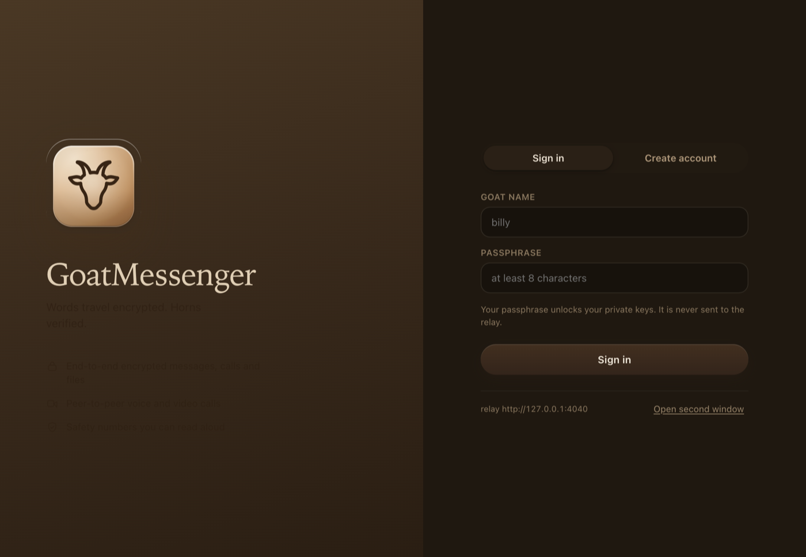
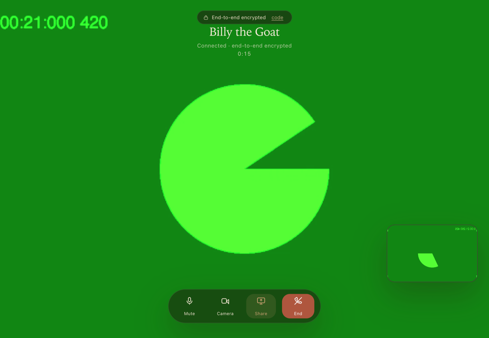
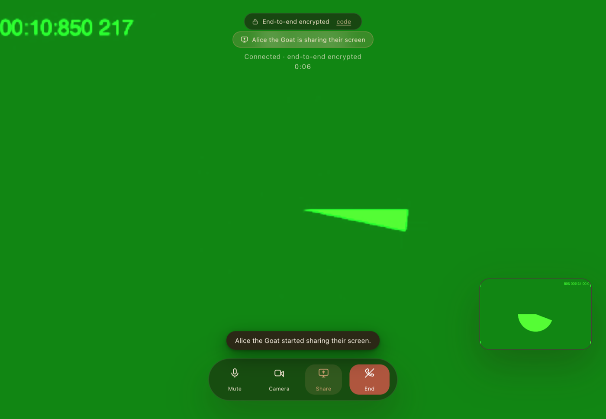
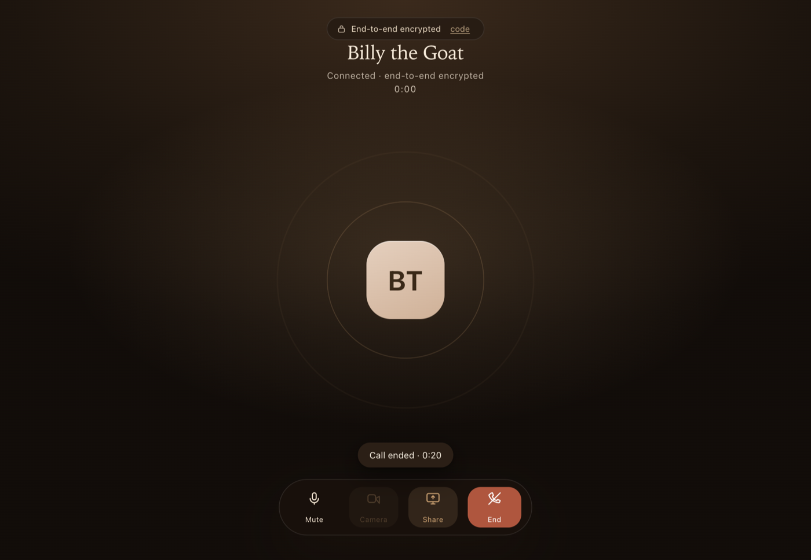
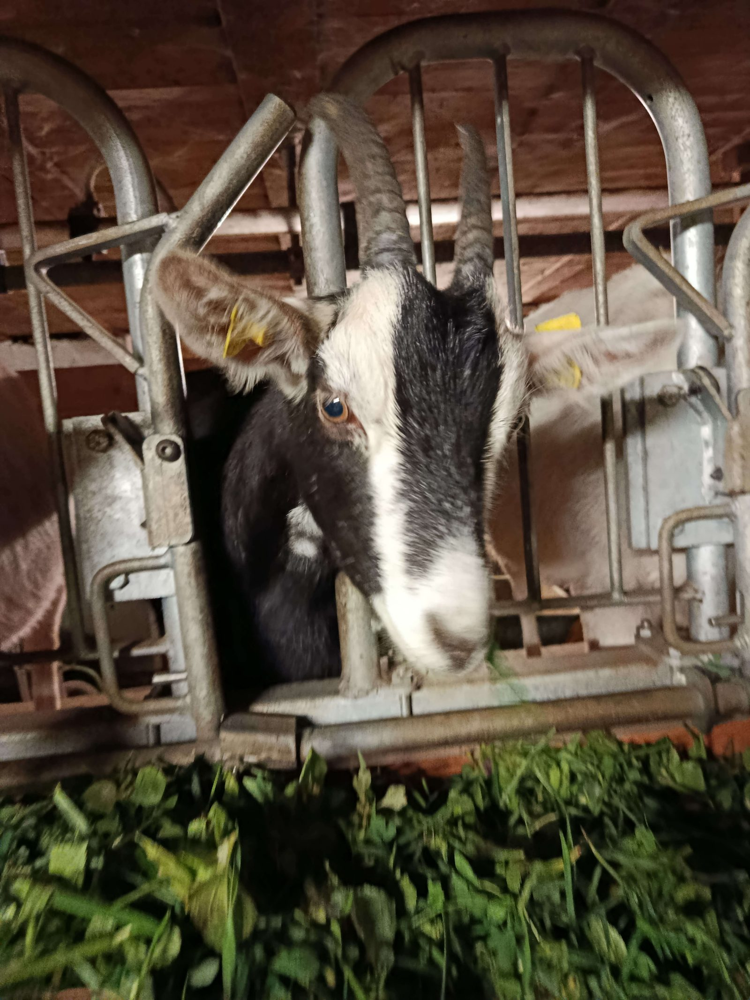
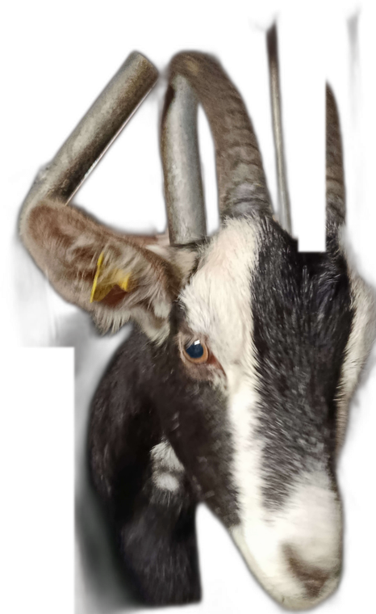

🔐 Double Ratchet messaging
X3DH key agreement with signed & one-time prekeys, then a full Double Ratchet: per-message keys, forward secrecy and break-in recovery on every turn. Out-of-order delivery and replays are handled, not hoped away.
encrypted · peer-to-peer · open
GoatMessenger is an end-to-end encrypted desktop messenger — the X3DH handshake, a full Double Ratchet, encrypted attachments and peer-to-peer encrypted calls, wrapped in a warm camel-and-espresso interface. macOS · Windows.
Unsigned, free download. Windows SmartScreen asks for “More info → Run anyway” the first time.

X3DH key agreement with signed & one-time prekeys, then a full Double Ratchet: per-message keys, forward secrecy and break-in recovery on every turn. Out-of-order delivery and replays are handled, not hoped away.
Images, files and recorded voice notes are sealed on your machine with a one-off AES-256-GCM key. The key travels inside the encrypted message — the relay stores nothing but ciphertext.
Real peer-to-peer WebRTC. Call signalling is sealed under a call key derived from signed ephemeral keys, media is DTLS-SRTP, and both sides confirm the same six-digit call security code.
The server is a tiny Node process you run yourself — locally, on a VPS, or through a tunnel. It forwards ciphertext and verifies sign-ins; it cannot read a thing.
A 60-digit fingerprint per conversation you can read aloud and mark verified — no blind trust in a green tick.
Presence, typing indicators, read receipts, unread badges, day dividers, search, voice notes, clipboard paste & drag-and-drop files, dark mode, and history that stays on your disk.





the mascot
Every messenger needs a face. Ours isn't a cartoon: it's Billy, the developer's actual goat, photographed exactly as he is — horns, ear tags, hay and all. He has his own account on the relay, with a verified checkmark that no database edit can produce — it only exists in the code we ship.

Run it on your own machine or a tiny VPS, share the address, done:
npm install
npm run server # relay on 127.0.0.1:4040
# share it across the internet through a tunnel:
npx ngrok http 4040 # paste the https URL into Settings → NetworkThe apps ship with an embedded relay for solo use; anyone you send the app to can hang their own relay off yours, or spin up a friendlier one on any Node host.